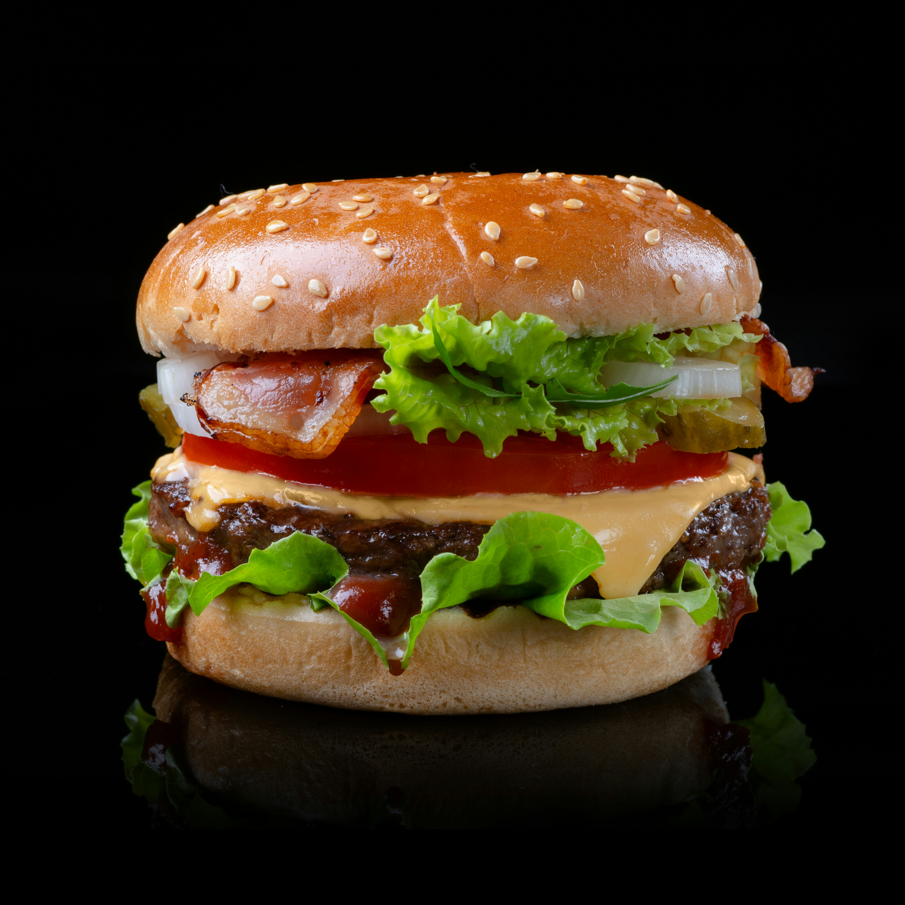

Odin Recipes
Burger

This is the recipe of how to make best Burger Sauce
Whisk all the ingredients together, then chill in the fridge for at least
an hour before serving. That's it! You'll find the full, step-by-step
recipe below.
ingredients
- Condiments
- Seasonings
- Hot sauce
- Vinegar
Steps
-
Whisk together mayonnaise, ketchup, mustard, onion, garlic, and vinegar
in a bowl. Season with hot sauce and seasoned pepper.
- Cover and chill at least 1 hour before serving.